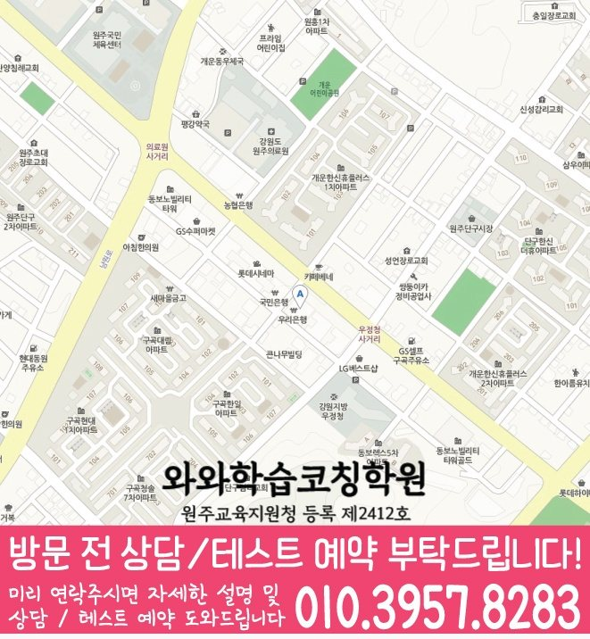

과목별 진단
영어, 수학, 국어 중 지금 어느 과목의 어떤 부분이 부족한지 먼저 나누어 확인합니다.
ALL-SUBJECT LEARNING COACHING
강원 원주시 개운동 학생을 위한 와와학습코칭센터 안내입니다. 영어·수학·국어 학습 진단, 통합 플래너, 오답 재학습 기준을 상담 전에 확인할 수 있습니다.


와와학습코칭센터 단구점 기준으로 개운동 학생의 상담 범위를 확인합니다. 실제 방문·상담 전에는 주소와 이동 동선을 함께 확인해 주세요.
핵심 요약
개운동 학생과 학부모님께 필요한 것은 과목마다 다른 곳을 오가는 것이 아니라, 한 곳에서 전체 학습 흐름을 확인하는 일입니다.
영어, 수학, 국어 중 지금 어느 과목의 어떤 부분이 부족한지 먼저 나누어 확인합니다.
과목별 학습량을 한 플래너에 담아 서로 밀리지 않도록 조율하고 실행 여부를 확인합니다.
과목마다 다른 오답 원인을 분류하고, 비슷한 유형을 다시 풀며 반복 실수를 줄입니다.
학원 선택 가이드
형제자매를 같은 학원에 보내더라도 학년과 성향이 다르면 필요한 관리도 달라집니다. 한 곳에서 관리하더라도 각자에게 맞는 방향을 따로 확인하는 것이 좋습니다.
와와학습코칭센터 단구점은 강원 원주시 개운동 학생을 기준으로 상담을 진행하며, 남원주중학교, 단구중학교 학생들이 주로 문의합니다. 실제 등록 전에는 강원특별자치도 원주시 서원대로 406 리더스빌딩 402을 기준으로 이동 동선과 상담 가능 시간을 확인하는 것이 좋습니다.
상담은 등록을 결정하는 자리가 아니라, 지금 아이에게 어떤 관리가 필요한지 함께 확인해보는 자리로 생각해주시면 좋겠습니다.
AEO ANSWER
여러 과목 숙제가 겹쳐서 아이가 힘들어한다면?
과목별 학습량과 우선순위를 조정해 부담을 나누는 것이 먼저입니다. 무조건 줄이기보다 순서를 정리하는 방식이 효과적입니다.
학원을 고를 때 기준이 궁금하다면?
설명이 화려한 곳보다, 아이의 현재 상태를 얼마나 구체적으로 진단해주는 곳인지를 먼저 보시는 것이 좋습니다.
형제자매를 같은 학원에 보내도 될까요?
학년과 성향이 다르면 관리 방식도 다르게 적용되니, 각자에게 맞는 방향을 따로 확인하시면 됩니다.
여러 과목을 같이 보는 학원과 과목별 전문학원, 어떤 게 나을까요?
여러 과목에서 비슷한 어려움(시간관리, 자기주도학습 부족)을 겪고 있다면 통합 관리가 도움이 되고, 한 과목만 크게 부족하다면 그 과목에 집중하는 것도 방법입니다.
LOCAL & STUDENT FIT
개운동 생활권 학생의 학교 진도와 시험 일정에 맞춰 전과목 관리 방향을 상담합니다.
학년별로 필요한 관리가 다르기 때문에 학습 습관, 내신, 진학 준비 시기를 나누어 봅니다.
여러 과목을 따로 관리받기 번거로운 학생, 형제자매가 함께 다닐 학생, 학습 습관부터 잡아야 하는 학생에게 적합합니다.
초등학교: 구곡초등학교, 서원주초등학교 · 중학교: 남원주중학교, 단구중학교 · 고등학교: 치악고등학교, 원주고등학교
수업 가능 학교 참고
일반 학원과의 차이
일반적인 학원 운영 방식과 코칭아카데미의 통합 학습관리 방식을 같은 기준으로 비교했습니다.
CENTER INFO
강원 원주시 개운동 학생 상담 기준으로 안내합니다.
강원특별자치도 원주시 서원대로 406 리더스빌딩 402
원주교육지원청 등록 제2412호
TUITION
서울 외 지역 기준으로 안내되는 학습료입니다. 실제 금액은 상담 시 학생 과정과 교육청 신고 기준에 따라 확인해 주세요.
서울 외 지역 기준 · 1회 90~100분 수업
| 횟수 | 초등 | 중등 | 고등 |
|---|---|---|---|
| 주 3회 | 219,000원 | 236,000원 | 269,000원 |
| 주 4회 | 279,000원 | 301,000원 | 344,000원 |
| 주 5회 | 339,000원 | 366,000원 | 419,000원 |
* 학습료는 지역, 수업 조건, 교육청 신고 기준에 따라 일부 차이가 있을 수 있습니다.
CHECKLIST
전화, 방문 상담 중 편하신 방식을 말씀해주세요.
영어, 수학, 국어 중 지금 필요한 과목을 알려주세요.
이전에 다닌 학원이 있다면 진도와 방식을 확인합니다.
과목마다 강점과 약점이 다르기 때문에 따로 확인합니다.
FAQ
네, 상담 시간을 여유 있게 확보하기 위해 미리 연락 주시면 좋습니다.
현재 학년의 핵심 개념과 이전 학년 필수 내용을 중심으로 간단히 확인합니다.
공통 개념은 함께 배우되, 학생 수준에 따라 보충 자료나 심화 자료를 다르게 제공합니다.
기본적인 입학 상담은 무료로 진행합니다. 별도 진단 프로그램은 상담 시 안내해드립니다.
처음에는 구체적인 학습량과 방법을 제시하고, 익숙해지면 스스로 계획을 세우도록 단계적으로 지도합니다.
학교별 시험 범위에 맞춰 과목별 우선순위를 정하고 집중적으로 관리합니다.
PARENT REVIEW
아이가 학원 가는 것을 부담스러워하지 않습니다.
소수 인원으로 봐주셔서 질문하기 편하다고 합니다.
국어까지 함께 봐주셔서 세 과목을 따로 다닐 필요가 없어졌습니다.
영어, 수학을 따로 보지 않고 한 번에 봐주셔서 상담이 훨씬 편했습니다.
선행보다 지금 필요한 것부터 챙겨주셔서 믿음이 갔습니다.
고등학교에 올라가서도 이어서 관리받을 수 있어 든든합니다.
근처 학원페이지
같은 지역의 다른 과목과, 가까운 지역 페이지로 이동할 수 있도록 정리했습니다.